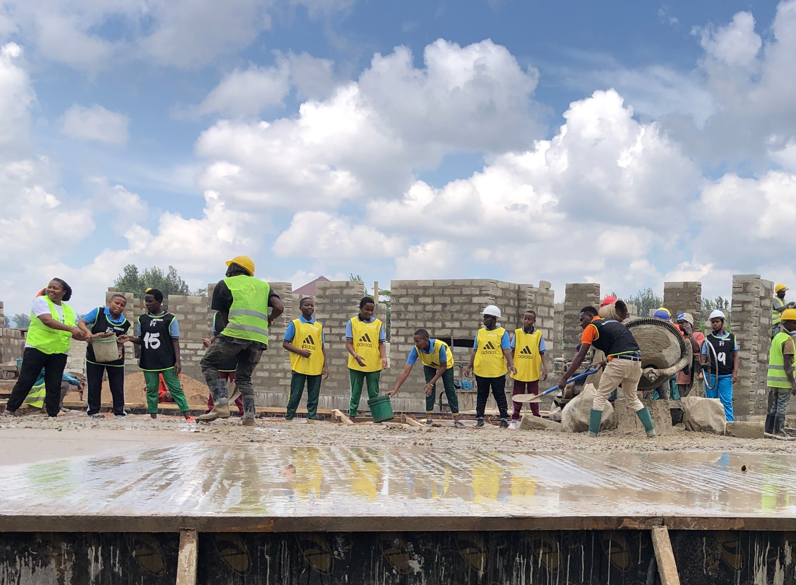
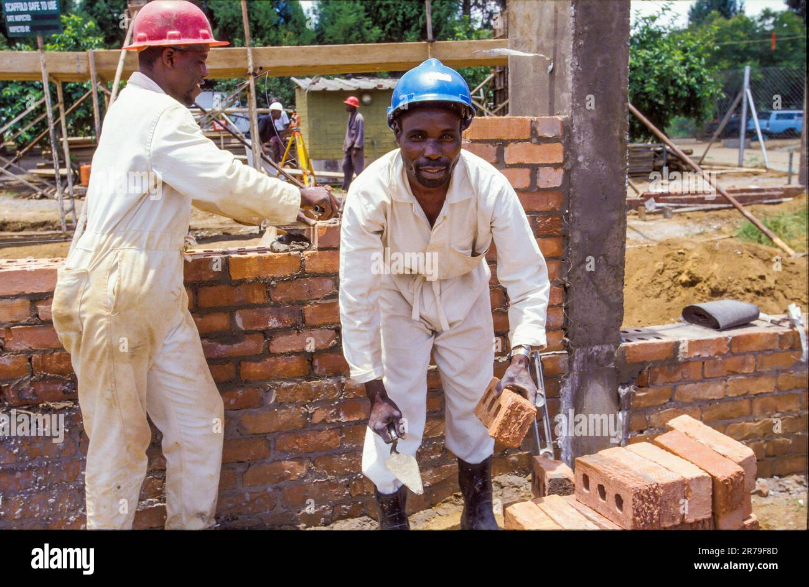
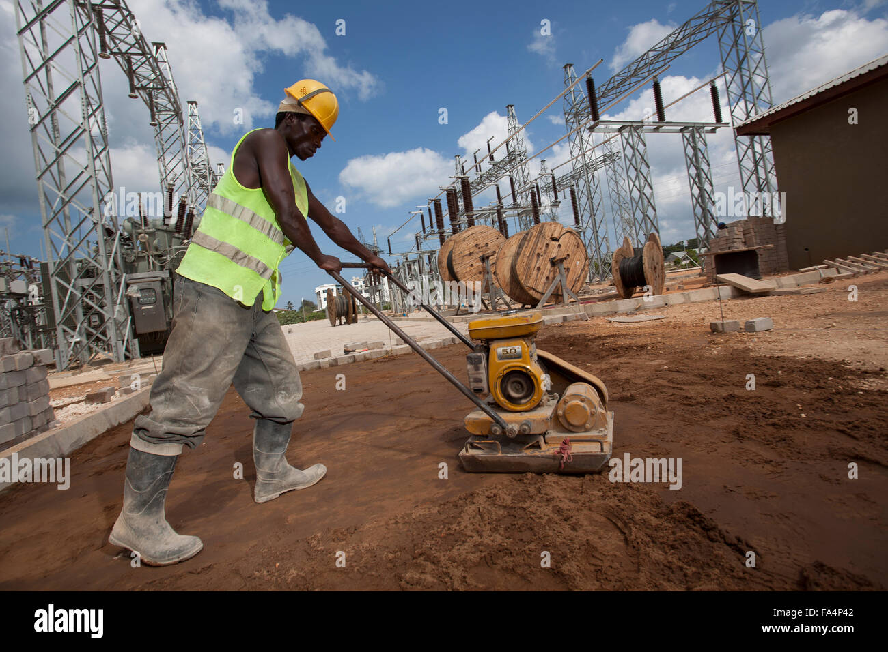
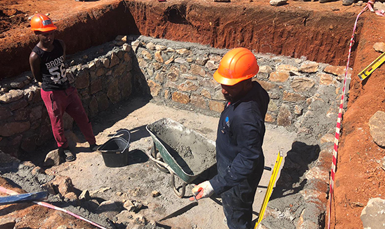

A local outlook
We understand the importance of designing and delivering for the Tanzanian context, with practical choices that respect the site, budget and intended use.
Twavwane is a Tanzania-based contractor serving clients who need a construction partner that understands the realities of local projects. Our approach is grounded in clear communication, responsible site practice and close attention to the details that shape a lasting result.
Construction is not only about materials and drawings. It is also about people, timing, access, weather, coordination and the decisions made when conditions change. We bring those realities into the planning process so the work stays focused and accountable.
We understand the importance of designing and delivering for the Tanzanian context, with practical choices that respect the site, budget and intended use.
We keep work moving through organised preparation, clear responsibilities and regular updates rather than rushed promises.
Good construction should serve its users for years. We value durable choices, careful finishing and a standard of work that can be maintained.




